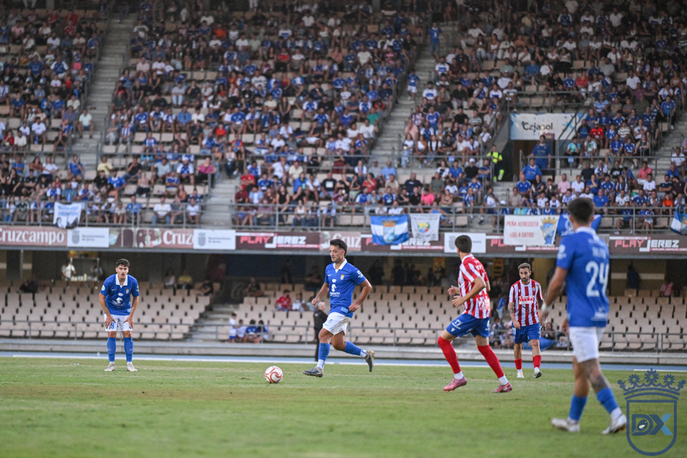

El Xerez, abocado al cierre parcial de Chapín y a una multa de 3.000 euros por el lanzamiento de objetos

Foto: Diario XerecistaEl club será sancionado previsiblemente por reincidir en el lanzamiento de objetos al terreno de juego, después de lo ocurrido en el derbi de Copa ante el Cádiz CF.
El Xerez CD será sancionado, previsiblemente, con el cierre parcial de su estadio y una multa de 3.000 euros por reincidencia en el lanzamiento de objetos.
La sanción llega tras el derbi de la primera eliminatoria de la Copa del Rey ante el Cádiz CF, jugado el jueves en Chapín (1-3). En el minuto 59, después del 1-2 de García Pascual, el árbitro detuvo el partido por el lanzamiento de objetos desde la curva del Fondo Sur.
Reincidencia
No es la primera vez esta temporada. Ya ocurrió en el partido de liga ante el Ciudad de Lucena, el 18 de octubre en Chapín, y esa condición de reincidente es la que agrava el castigo, que pasa de la multa al cierre parcial del recinto.
Queda por conocer qué zona del estadio se verá afectada y en qué partido se cumplirá la sanción. El próximo encuentro del Xerez en Chapín es ante el Antoniano, el 15 de noviembre.
🇬🇧 Read in English ← Volver a la portada